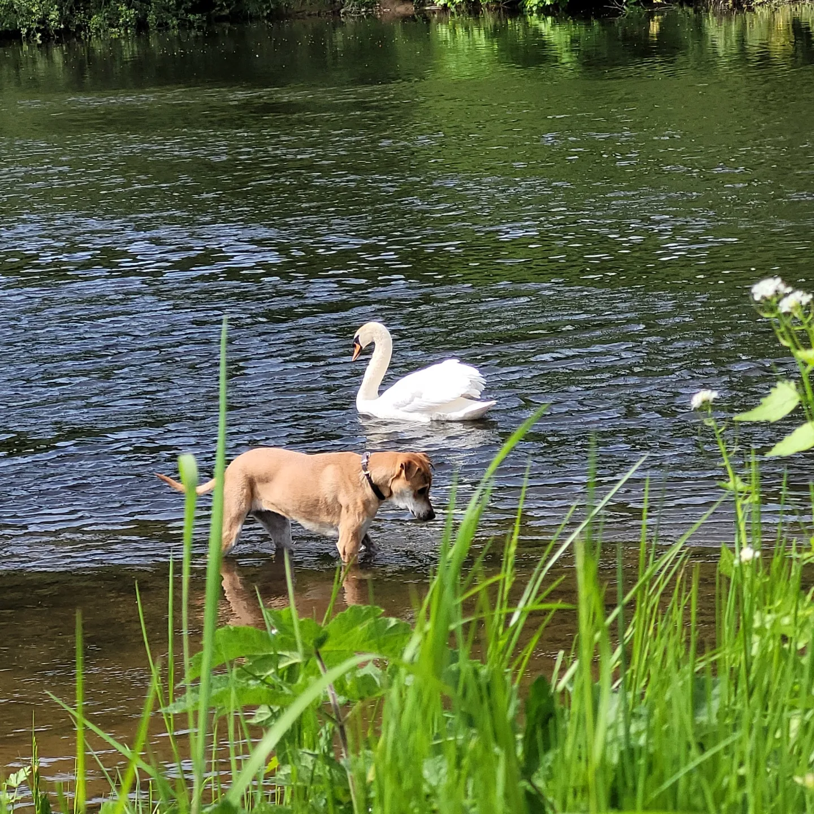
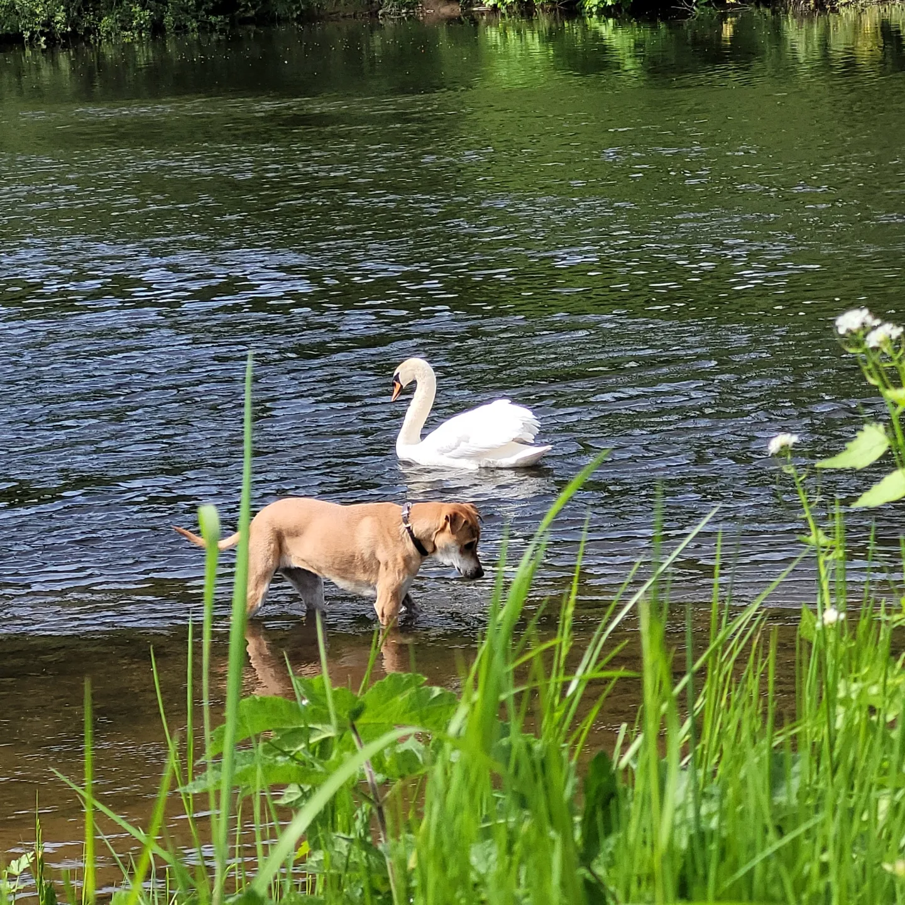

The Story of Lilu
Lilu was found in a rubbish tip in Singapore at 8 weeks old. She was malnourished, sick, and covered in fleas. Fortunately, she was rescued by a kind-hearted person who nursed her back to health and gave her a new home in England.

Now, Lilu is a happy and healthy dog who loves to play, cuddle, and go on adventures with her new family.
 

"A dog is the only thing on earth that loves you more than he loves himself."
-Josh Billings
Here is a video that will put a smile on your face!